OFİS & HUKUK BÜROSU
Showroom: İzmir – Türkiye
Fabrika: Kaynaklar – İzmir
Telefon: 0532 426 17 88
E-posta: yesilaymutfak@gmail.com
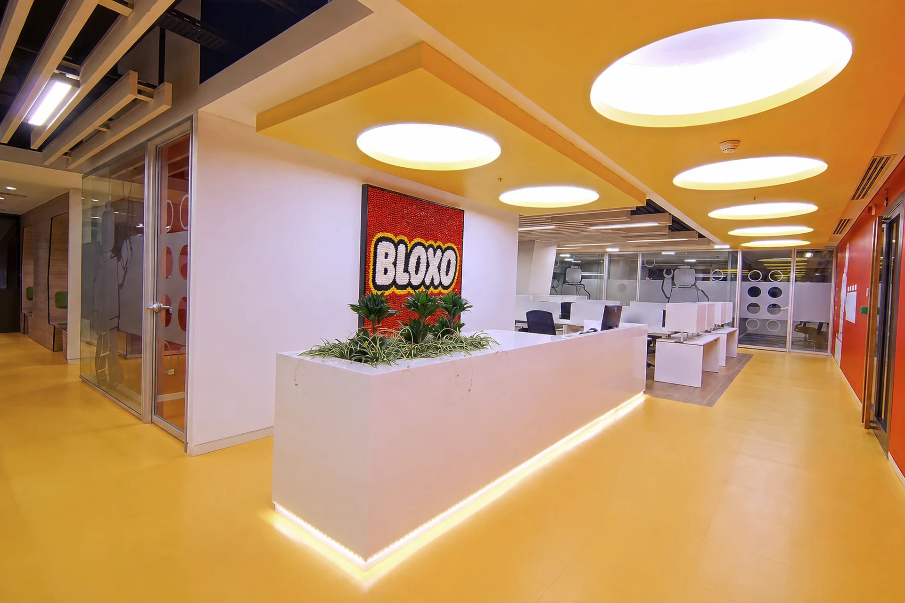
Prestijli hukuk büroları, şirket yönetim merkezleri ve gizlilik odaklı görüşme ofislerinde akustik konfor, 3D mimari projelendirme ve anahtar teslim uygulama.
Sağlık Bakanlığı standartlarına tam uyumlu sterilizasyon alanları, ergonomik hasta kabul ve fonksiyonel klinik fit-out uygulamaları.
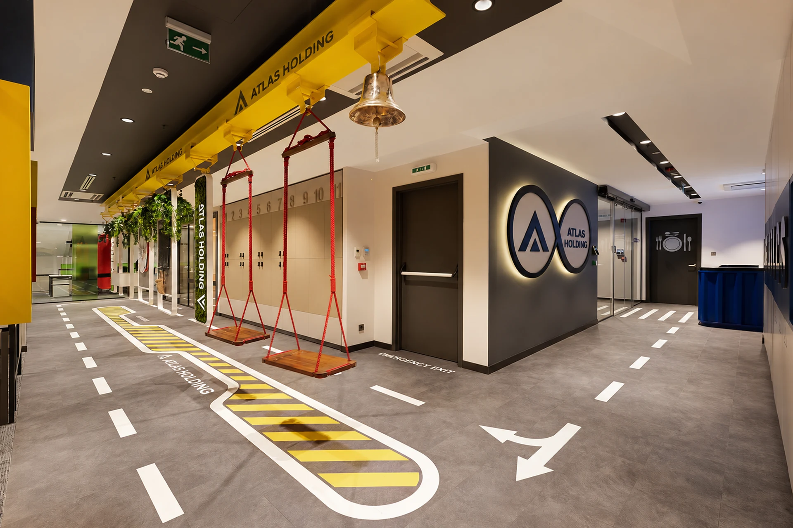
Müşteriyi içine çeken sıcak ambiyans, doğru aydınlatma mühendisliği ve mutfak-servis akışını kusursuzlaştıran anahtar teslim şantiye yönetimi.
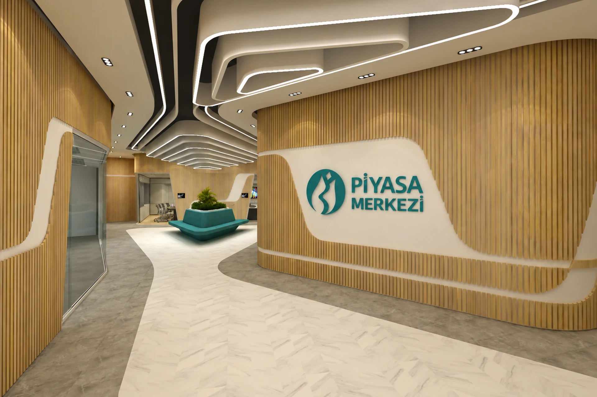
Özel aydınlatmalı mücevher vitrinleri, optik teşhir üniteleri ve tekstil showroomlarında satış hacmini artıran stratejik mağazacılık mimarisi.
Otel lobilerinden oda renovasyonlarına, spa ve sosyal alanlardan resepsiyona kadar yüksek müşteri puanı sağlayan lüks mimari taahhüt.
Yüksek güvenlikli altyapı, kurumsal kimlik kılavuzuna %100 sadakat ve sıkı teslim takvimli banka şube mimari kurulumları.
İzmir atölyemizde üretilen hassas CNC mimari mobilyaların yurtdışına ihracatı ve yerinde anahtar teslim montaj koordinasyonu.
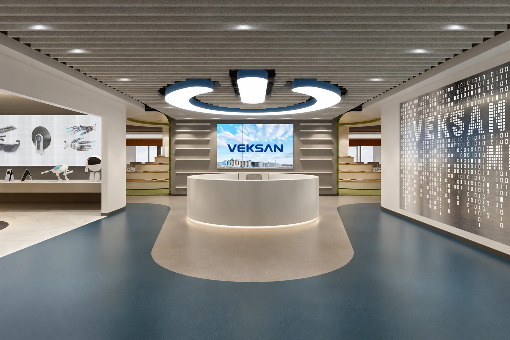
Parlamayan özel indeksli optik aydınlatması, kilitli güvenlikli teşhir çekmeceleri ve şık bekleme alanları ile modern optik mimarisi.
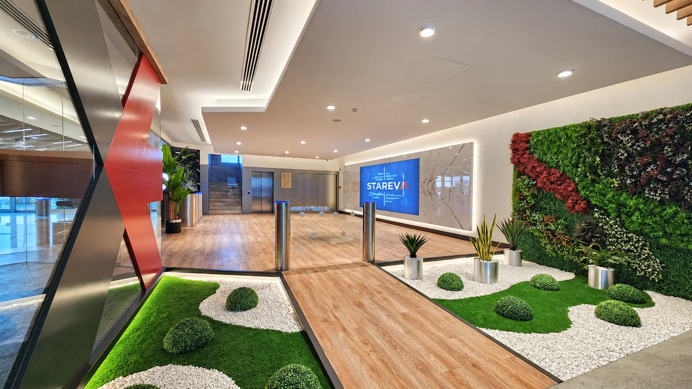
Kıyafet renklerini doğru yansıtan CRI>95 aydınlatma, lüks kabin konforu ve akıcı askı sistemleriyle tekstil perakendeciliğinde fark yaratın.
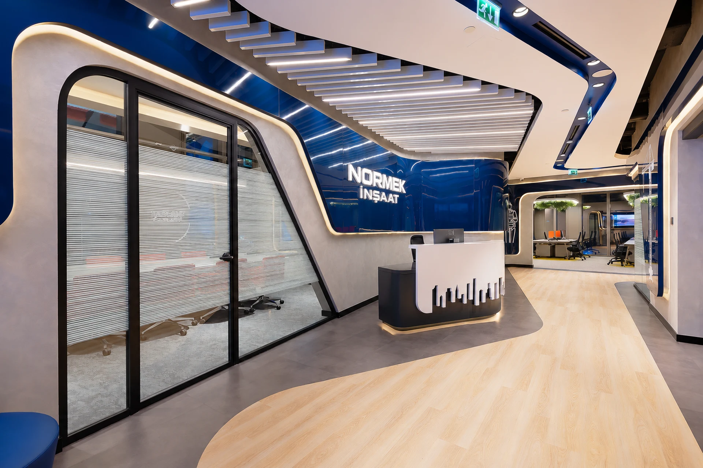
Göz alıcı pırlanta/altın aydınlatma mühendisliği, kırılmaz lamine camlı vitrinler ve VIP müşteri ağırlama odalarıyla kusursuz kuyumcu mimarisi.
Kurumsal ofislerden klinik sterilizasyon alanlarına, gastronomi mekanlarından butik otel ve lüks konut renovasyonlarına kadar İzmir Kaynaklar fabrikamızın yüksek üretim kalitesiyle tamamlanmış mimari uygulamalarımız.


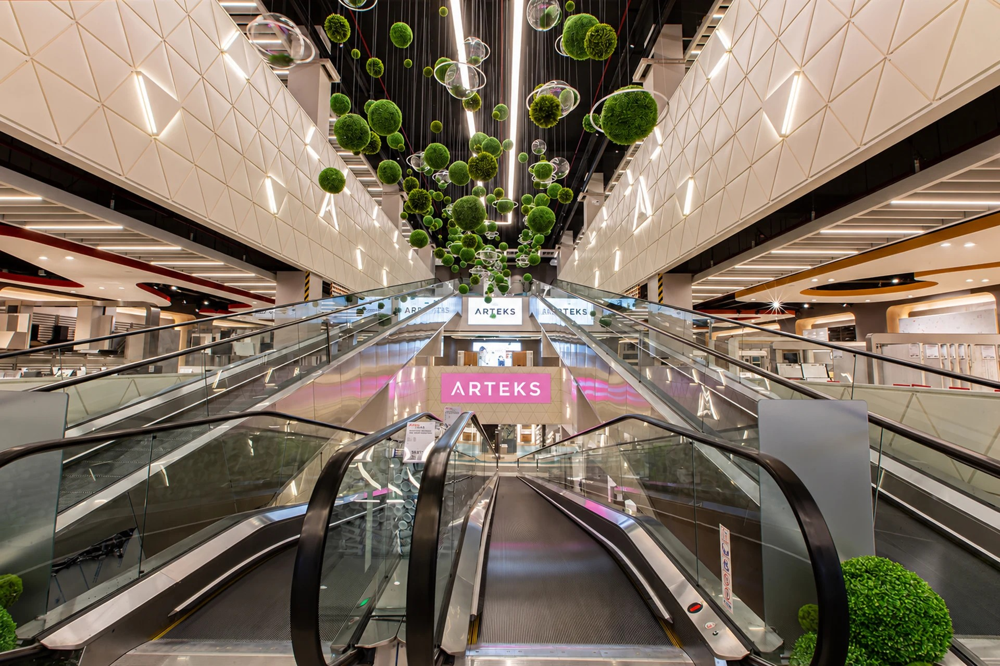
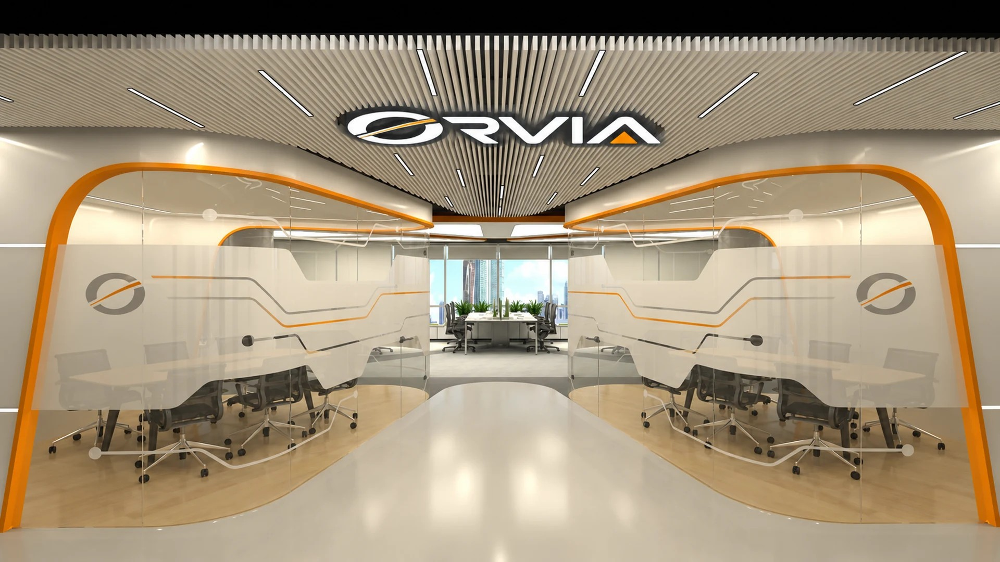


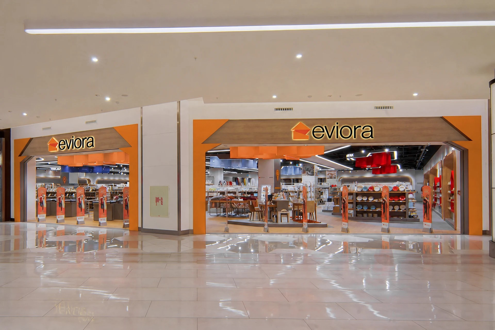
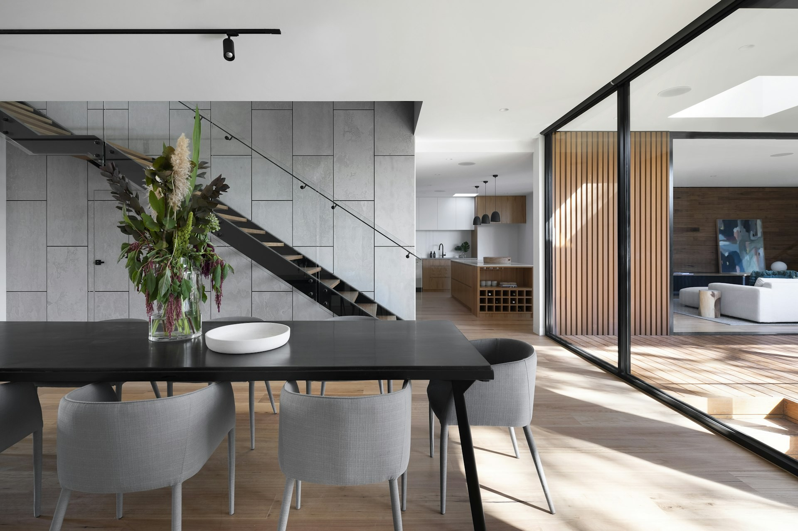


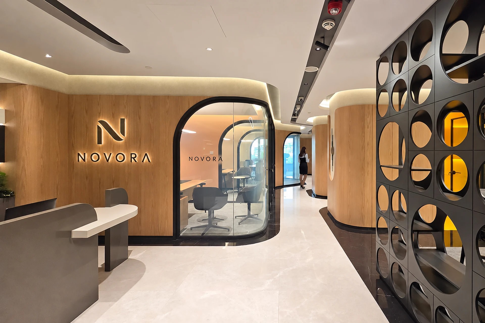


İzmir Kaynaklar'daki yüksek kapasiteli makine parkurumuz ile banko, akustik panel, vitrin ve yangına dayanıklı kapıları aracı komisyonsuz, milimetrik toleransla üretiyoruz.
Mağaza ve klinik açılışlarında zaman nakittir. Modüler ön montaj sistemi ve çift vardiyalı şantiye organizasyonuyla taahhüt edilen tarihte kesin anahtar teslim.
Sağlık Bakanlığı klinik şartnameleri, yangın tahliye kaçış standartları ve bankacılık güvenlik prosedürlerine %100 uyumlu mimari projelendirme ve mühendislik imzası.